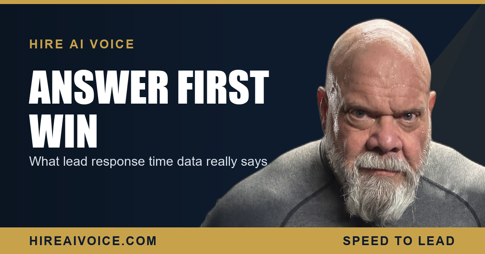

Lead Response Time: What the Data Says About Winning the Job

The Short Version
- Lead response time is how long it takes you to contact a new inquiry. The research on it is consistent and brutal.
- Contact a lead within 5 minutes and your odds of qualifying it multiply. Wait 30 minutes and they fall hard.
- Once an hour passes, the chance of even reaching the lead drops sharply, because they have already called someone else.
- For a small service business, a human alone cannot hit those numbers consistently. Automating the first response is the only reliable way.
- A 24/7 AI voice agent makes your response time effectively zero, every call, no exceptions.
What Does the Lead Response Time Data Actually Say?
It says speed is the variable that decides most deals, and almost nobody is fast enough. Across years of lead-response research, the same pattern keeps showing up: the businesses that contact a new lead in the first few minutes reach and qualify far more of them than the businesses that take their time. This is not a marketing opinion. It is what the numbers show, over and over, across industries.
The reason it matters so much for a Santa Clarita or Los Angeles County service business is simple. You are not losing leads because your work is bad or your price is high. You are losing them in the gap between when the phone rang and when anyone answered. The data points straight at that gap.
Why Is 5 Minutes the Number That Matters?
Because responding within 5 minutes is where the odds peak, and every minute after that costs you. Studies of inbound leads have found that the chance of qualifying a lead is many times higher when you respond within 5 minutes than when you wait 30. Not a little higher. Many times higher. Five minutes is the edge of the cliff, and most businesses are standing well past it.
Think about why that holds up. The customer with a dead AC unit or a cracked tooth is not filling out a form and waiting patiently. They are in the moment of need, and that moment is short. Reach them inside it and they answer your questions and book. Reach them an hour later and the moment is gone.
What Happens to Your Odds After an Hour?
They fall off a cliff, because the customer has already moved on. The research is clear that once you pass roughly the one-hour mark, the chance of even contacting the lead, let alone qualifying it, drops sharply. The lead did not vanish. They simply called the next name on the list, reached a human, and booked. You were never in the running because you were too slow to enter it.
By the time you call back, the data says the job is already gone.
This is the part owners underestimate. A new lead usually contacts several businesses at once. The first to respond shapes the entire conversation, and often closes it before anyone else picks up. Slow response time does not just lower your odds. It hands the job to whoever was faster.
What Does This Mean for a Small Service Business?
It means the math is stacked against you, and not because you are doing anything wrong. The plumber is under a sink. The HVAC tech is on a roof in 100-degree heat. The roofer is on a ladder. The agent is mid-showing. You physically cannot answer in 5 minutes while you are doing the work that pays the bills, and the calls never wait for a convenient time.
So the leads you already paid to generate, through ads, referrals, and reviews, leak out the back of the business. The data on lead response time is really a measurement of that leak. For most service businesses, the biggest source of lost revenue is not their marketing budget. It is the response time on the calls that already came in.
The good news is that the same data points to the fix. If speed wins, then making your speed automatic and instant wins automatically. You do not need more leads. You need to stop missing the ones you have.
How Do You Make Your Response Time Effectively Zero?
You automate the first response so a human is never the bottleneck. A 24/7 AI voice agent answers every inbound call the instant it rings, whether you are on the job, on another call, or asleep. It greets the caller by your business name, answers questions, qualifies what they need, and books the appointment on the spot. Your response time stops being minutes or hours and becomes zero, on every single call.
This is the whole point of an AI receptionist that works around the clock: it closes the exact gap the data keeps pointing at. The customer with the burst pipe at 9 PM does not get your voicemail and dial a competitor. They get an instant conversation and a booked appointment, inside the window where the odds are highest. If you want the deeper case on why those first minutes decide everything, read why the first 5 minutes decide the job.
What Should You Do This Week?
You do not need a new budget. You need to act on what the data already tells you. Three moves:
1. Measure your real response time. For one week, track how long it actually takes to contact each new lead, and how many you never reach at all. Compare it to the 5-minute number. That gap is your lost revenue.
2. Automate the first touch. A 24/7 AI voice agent that answers every call and books the appointment turns your slowest response times into instant ones, with no extra effort from you.
3. Stop competing on speed you cannot win manually. The businesses winning in Santa Clarita and LA County are not the fastest typists. They are the ones whose first response is automatic. The data says speed wins. Make yours instant.
Make Your Response Time Zero
Our AI voice agent answers every call 24/7, books the job, and follows up automatically. Live in 72 hours. $297/month, no contracts. Or call Sarah, our live agent, and hear it yourself.